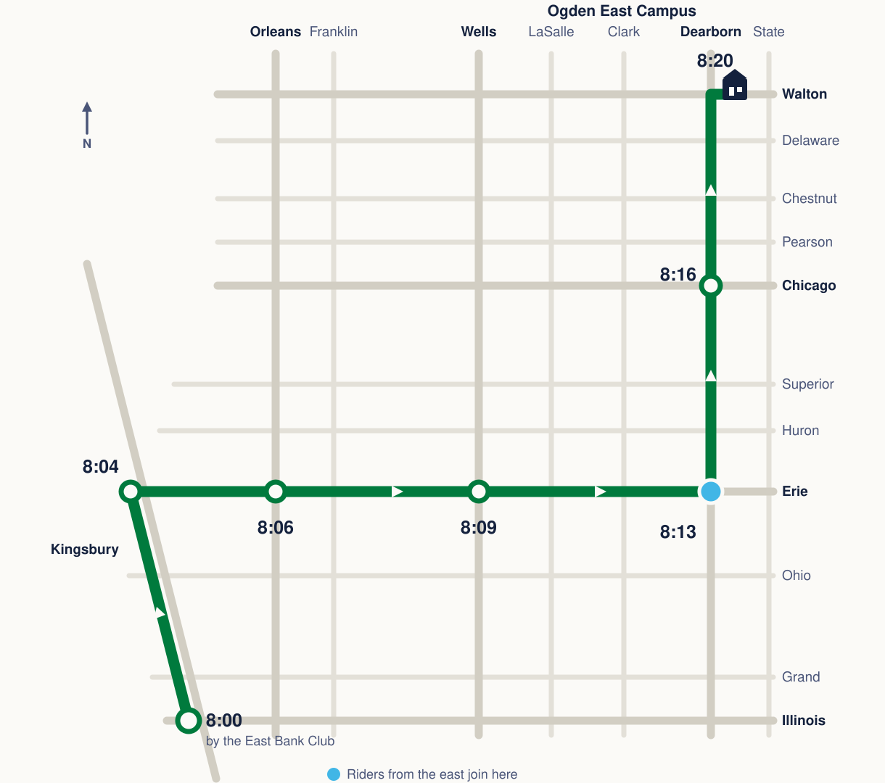
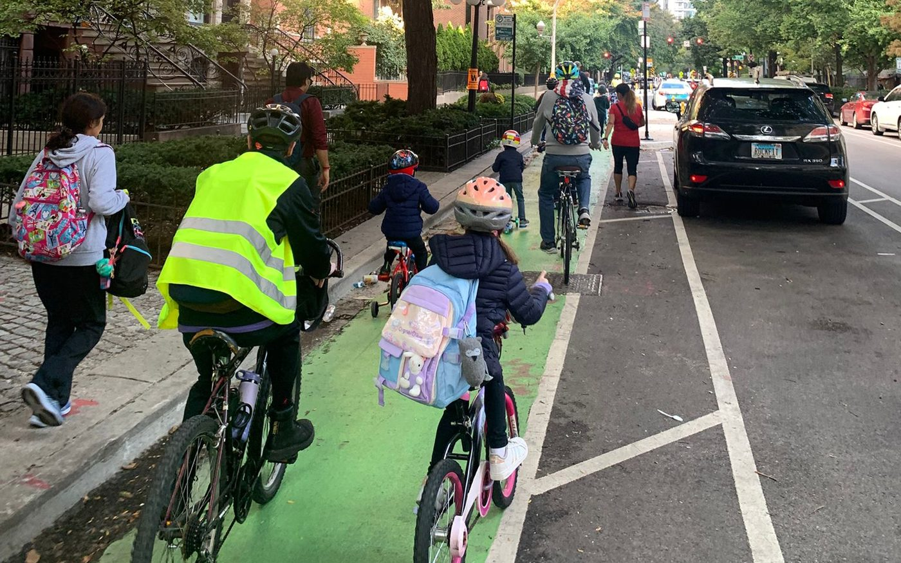
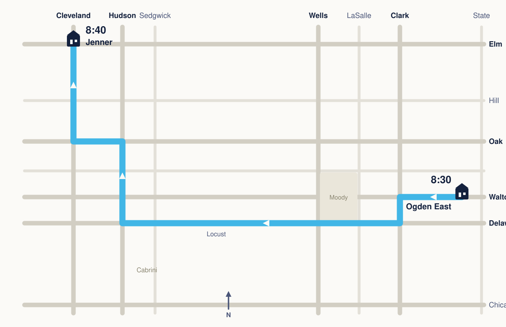

Route
North up Kingsbury, east on Erie, then north on the Dearborn protected bike lane.
Times below are approximate. Check the WhatsApp group the night before for changes.
River North branch
- 8:00amKingsbury & IllinoisBy the East Bank Club. Be here by 7:57 — we roll at 8:00
- 8:04amKingsbury & ErieTurn east
- 8:06amErie & Orleans
- 8:09amErie & Wells
- 8:13amErie & DearbornTurn north. Riders from Streeterville and River East join here
- 8:16amDearborn & Chicago
- 8:20amOgden East CampusBike racks by the entrance

Be at your corner three minutes early. The bus rolls through on time and doesn't wait — if you miss it, ride up Dearborn and you'll catch us at the next light.
Coming from the east?
Meet us at Erie & Dearborn at 8:13 and fall in as we turn north. If there's enough demand we'll run a proper River East branch — tell us in the WhatsApp group.
This is also the easiest place to join on a scooter, or with a very young rider. It's about a third of a mile from there, with a light every block or two, so the pace is gentler than the run along Erie.

Continuing to Jenner
Jenner, on Cleveland Avenue in Cabrini-Green, is Ogden's campus for grades 5 to 8, and drop-off there is 8:45. The Ogden–Jenner bike bus leaves the East Campus at 8:30 and reaches Jenner at 8:40, so middle schoolers can ride the whole way with us.
From the East Campus it runs west on Walton, south on Clark, then west on Delaware and Locust past the Moody campus, north on Hudson through Cabrini, west on Oak and north on Cleveland to the school door. It's about nine tenths of a mile on quiet streets.

If your middle schooler would ride this leg, say so in the WhatsApp group — it runs when there are families for it.
Other mornings
Some of us ride most dry mornings on the same route, leaving around 8:00am. No sign-up. Join in, or wave if you see us.